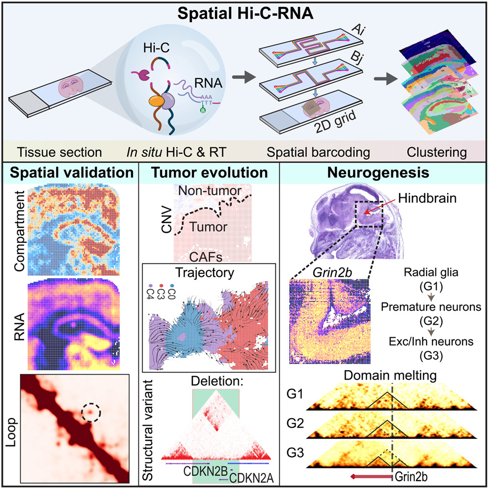
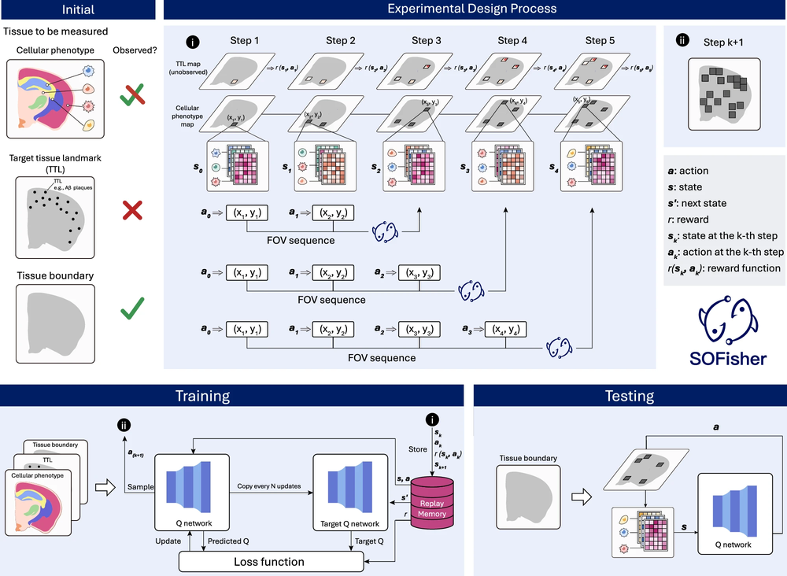
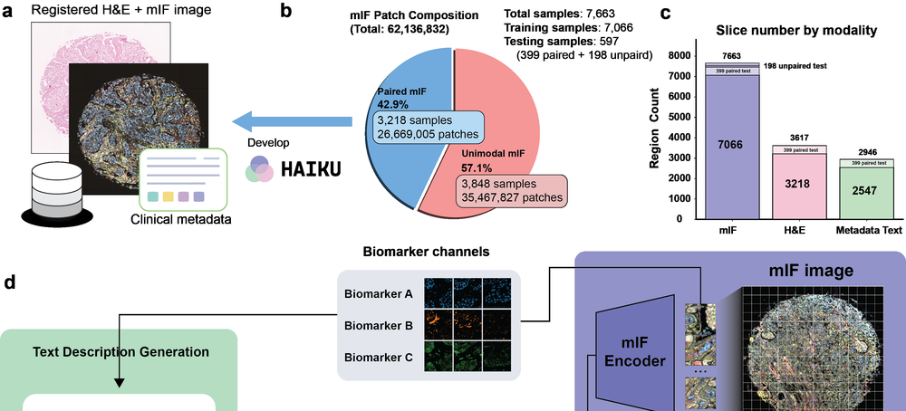
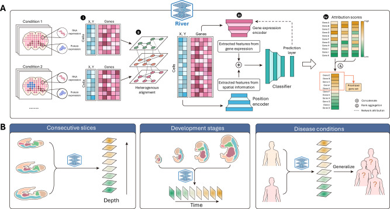
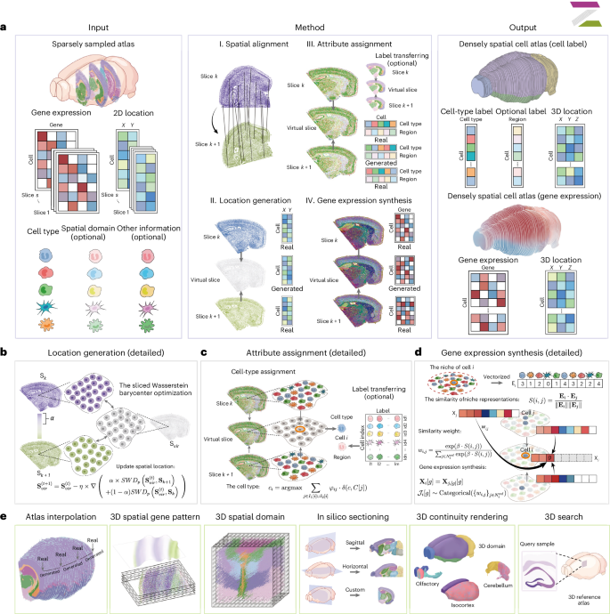
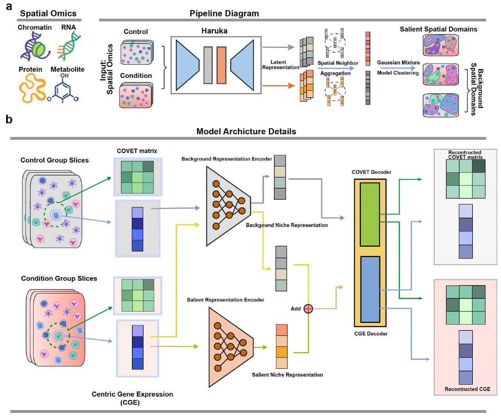

About Me
I am a Ph.D. candidate in Bioengineering at the University of Pennsylvania, co-supervised by Zhi Huang and Yanxiang Deng. My research focuses on Computational Biology, and AI Agents for Scientific Discovery.
Biology Spatial &
Single-cell Omics AI Agents for
Scientific Discovery
Selected Publications
* denotes equal contribution; is highlighted.

Spatial Hi-C-RNA simultaneously maps genome architecture and gene expression from the same tissue
Cell, 2026

SOFisher: reinforcement learning-guided experiment designs for spatial omics
Nature Communications, 2026




Other Publications
Spatial profiling of chromatin accessibility in formalin-fixed paraffin-embedded tissues
Nature Communications, 16(1):5945, 2025
Reusability report: Exploring the transferability of self-supervised learning models from single-cell to spatial transcriptomics
Nature Machine Intelligence, 2025
Complete spatially resolved gene expression is not necessary for identifying spatial domains
Cell Genomics, 4(6), 2024
Benchmarking spatial clustering methods with spatially resolved transcriptomics data
Nature Methods, 21(4):712-722, 2024
Experience
Arc Institute
Research Intern, Zhou Lab · Advisor: Jingtian Zhou
Whitehead Institute
Research Intern · Advisor: Na Sun
CartaBio
Remote Research Intern
ISTBI, Fudan University
Research Intern · Advisor: Zhiyuan Yuan
Education
University of Pennsylvania
Ph.D. in Bioengineering
Kyoto University
M.Sc. in Intelligence Science and Technology · Advisor: Tatsuya Akutsu
University of Electronic Science and Technology of China
B.Eng. in Automation